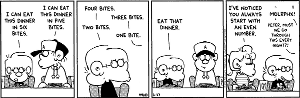

|
Elementary Number theory Fall 2008 |
 |
| Lecture: | MWF 2:10-3:00 TH 428 |
| Prerequisites: | MATH 227 (Calculus II) with a grade of C or better |
| Instructor: | Dr. Matthias Beck |
| Office: | Thornton Hall 933 |
| Office hours: |
M 1:10-2:00 W 11:10-12:00 F 10:10-11:00 & by appointment |
Number Theory studies the integers: numbers like 0, 1, -3, 34, ... which we have been used to since childhood. A fundamental concept is that of divisibility: the integer a divides the integer b if we can find an integer c such that b=ac. This simple concept gives rise to a beautiful theory, encryptions schemes which are used on any computer today, and many famous open problems in mathematics, among other things.
As an example, we will consider prime numbers: those integers >1 that are only divisible by themselves and 1. There are infinitely many prime numbers, one of the many theorems we will prove in this course. The only even prime is 2, all others are odd. To say this in a more sophisticated way: there are infinitely many primes that give 1 as a remainder when we divide them by 2. Can one say something similar when we divide primes by 3? The only prime that does not give a remainder when divided by 3 is 3 itself. So all others give a remainder of 1 or 2. Are there infinitely many primes in both cases? To give an open problem, we mention twin primes: those are pairs of primes that differ by 2. Are there infinitely many twin primes?
Topics in this course will include:
- Divisibility
- Primes
- Congruences
- Arithmetic functions
- Primitive roots
- Quadratic reciprocity
- Continued fractions
Text books: G. Andrews, Number Theory, Dover, and W. Stein, Elementary Number Theory
Grading system & exam dates:
| 40% | Homework |
| 20% | Quizzes |
| 20% | Midterm exam (22 Oct) |
| 20% | Final exam (22 Dec) |
Grades will be assigned according to the following scheme:
| 87-100% | A |
| 75-86% | B |
| 58-74% | C |
| 50-57% | D |
| 0-49% | F |
I want to ensure that each of you accomplishes the goals of this course as comfortably and successfully as possible. At any time you feel overwhelmed or lost, please come and talk with me.
Homework: I will assign homework problems as we go through the material. We can discuss the homework problems at any time during class. All homework assignments of a given week have to be handed in by the start of the Friday class of the following week. You may hand in some of your problems early to be able to correct your mistakes. Although you may (and should) work together with your class mates, the solutions you hand in have to be your own.
Quizzes: I will frequently check your progress through unannounced quizzes given at the beginning of class. A quiz will typically test your concept of a certain definition or statement. There will be no make-up quizzes. At the end of the semester, I will drop the lowest of your quiz grades.
The way to learn math is through doing math. It is vital and expected that you attend every lecture. You will get a good feel for the math from there, but it is even more crucial that you do the homework. Working in groups is not only allowed but strongly recommended. The iLearn system allows you to send emails to anybody in your class. Contact each other and work together.
Some more general fine print:
SFSU academic calender
Tutoring
Academic Integrity and Plagiarism
CR/NCR grading
Incomplete grades
Late and retroactive withdrawals
Students with disabilities
Religious holidays
This syllabus is subject to change. All assignments, as well as other announcements on tests, policies, etc., are given in class. If you miss a class, it is your responsibility to find out what's going on. I will try to keep this course web page as updated as possible, however, the most recent information will always be given in class. Always ask lots of questions in class; my courses are interactive. You are always encouraged to see me in my office.